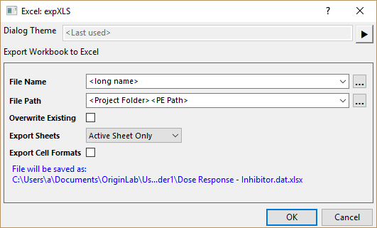
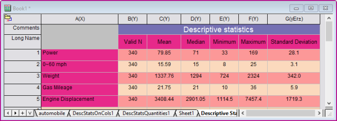
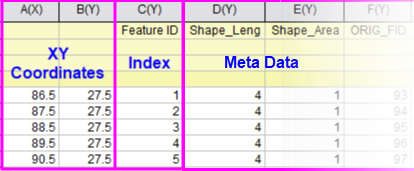
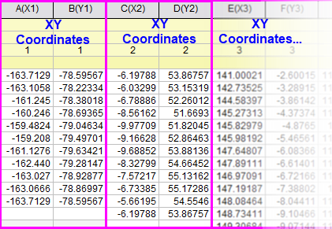

Arbeitsblätter und Matrizen exportieren
Export-Wks-Mat
Origin-Arbeitsblattdaten können in den fünf folgenden Formaten exportiert werden: ASCII, Excel, NI TDM (TDM, TDMS), Sound (WAV), ESRI-Shapefile (SHP). Origin-Arbeitsblätter können als einseitige PDF, mehrseitige PDF oder Bilddatei exportiert werden.
Origin-Matrixdaten können in den folgenden zwei Formaten exportiert werden: ASCII und Bild.
Arbeitsblattdaten als ASCII-Datei exportieren
Der ASCII-Export ist auf Arbeitsblätter, die nur aus Daten bestehen, beschränkt. Komplexe Dokumente, die eingebettete Informationen enthalten -- Berichtsblätter, Arbeitsblätter mit eingebetteten oder verknüpften Diagrammen (einschließlich Sparklines) -- können nicht vollständig in eine ASCII-Datei exportiert werden. Wenn die zu exportierenden Arbeitsblattdaten über eingebettete Bilder und Diagramme verfügen, werden diese Bilder und Diagramme während des Exportierens ignoriert.
Um die Arbeitsblattdaten als ASCII-Datei zu exportieren:
- Wählen Sie bei aktivem Arbeitsblatt Datei: Export: ASCII... im Hauptmenü von Origin, um den Dialog expASC aufzurufen.
- Verwenden Sie die Optionen für Dateityp, Pfad, Trennzeichen, Header etc. im Dialog und klicken Sie auf OK.
Schlüsseloptionen zum Exportieren von Arbeitsblattdaten als ASCII-Datei:
- Die Dateitypen .dat, .txt und .csv werden unterstützt. Wenn CSV ausgewählt ist, werden ggf. Anführungszeichen eingefügt, um die Zelleninhalte zu schützen.
- Unterstützung nur für den Export von ausgewählten Daten Beachten Sie, dass die Auswahl nicht zusammenhängen muss.
- Benutzerdefinierte Datentrennzeichen werden unterstützt (nicht verfügbar für den Dateityp CSV)
- Unterstützung für den Export von Headerinformationen
- Die volle numerische Präzision und fehlende Werte werden unterstützt.
Hinweise:
- Seit Origin 2018 werden verborgene Arbeitsblattspalten nicht standardmäßig exportiert. Wenn Sie die verborgenen Spalten beim Exportieren einschließen möchten, öffnen Sie das Skriptfenster (Fenster: Skriptfenster) und setzen Sie @UHC = 1. Dies ändert das Exportverhalten nur innerhalb der aktuellen Origin-Sitzung. Um diese Änderung permanent zu machen, lesen Sie bitte FAQ-708: Wie ändere ich permanent den Wert einer "@"-Systemvariablen?
- Ab Origin 2018b kann beim Export der Arbeitsblattdaten das Ende von leeren Spalten ausgeschlossen werden, indem das Kontrollkästchen Enden von leeren Spalten ignorieren im Zweig Optionen aktiviert wird. Der Export ignoriert dann alle leeren Spalten nach der letzten Spalte, die Daten enthält, wobei Metadaten nicht berücksichtigt werden, und die Spalten mit all den fehlenden Werten wird als leer betrachtet.
|
Arbeitsblatt-/mappe als Excel-Datei exportieren
Um die aktuelle Arbeitsmappe oder festgelegte Arbeitsblätter als Excel-Datei zu exportieren: Y* über das Menü Datei: Export: Excel... von der aktiven Arbeitsmappe aus auswählen und dann Kontrollkästchen Optionendialog zeigen aktivieren
oder
Der Dialog expXLS wird, wie unten zu sehen, geöffnet:
- 
- Der exportierte Dateiname und -pfad unterstützen die Substitutionsnotation. Wählen Sie in den Auswahllisten Dateiname und Dateipfad einen häufig verwendeten Dateinamen wie
<Langname> und einen Pfad wie <Projektordner><PE-Pfad>. Dies ist nützlich für das stapelweise Exportieren.
- Verwenden Sie Blätter exportieren, um die Optionen Gesamte Mappe oder Nur aktives Blatt festzulegen.
- Beim Exportieren der gesamten Mappe schließen Sie ausgewählte Blätter aus, indem Sie mit der rechten Maustaste auf den Blattreiter klicken und Von Excel-Export ausschließen wählen. Analyseberichtsblätter werden automatisch übersprungen.
- Um die Arbeitsblattformatierung zu exportieren, aktivieren Sie das Kontrollkästchen Zellenformate exportieren. Beachten Sie, dass nicht alle von Origins Formateinstellungen von Excel interpretiert werden können (z. B. signifikante Stellen, Spaltenzuordnungen), aber Eigenschaften wie Schrift/Schriftgröße, Füllfarbe der Zellen und Dezimalstellen sollten bewahrt bleiben.
- 
Arbeitsblatt-/mappe als SQLite-Datei exportieren
Um ein Blatt oder alle Blätter in der Arbeitsmappe als eine SQLite-Datei zu exportieren:
- Aktivieren Sie das Arbeitsblatt und klicken Sie auf Datei: Export: SQLite. Alternativ öffnen Sie das Skriptfenster (Fenster: Skriptfenster), geben Sie folgenden Befehl ein und drücken Sie dann Enter:
expSQLite -d
Der Dialog expSQLite wird geöffnet.
- Wählen Sie eine Dateierweiterung. Beachten Sie, dass die Dateistruktur und der Inhalt identisch sind unabhängig von dem gewählten Dateityp.
- Um alle Blätter in der Mappe in eine einzelne Datei zu exportieren, aktivieren das Kontrollkästchen Alle Blätter.
Weitere Informationen dazu finden Sie in diesem OriginLab-Blogeintrag.
Arbeitsblattdaten als National-Instruments-TDM-Datei exportieren
Arbeitsblattdaten können als National Instruments TDM-Datei exportiert werden. Dieses Format ist auf Arbeitsblätter, die nur aus Daten bestehen, beschränkt.
Um Arbeitsblattdaten als National Instruments TDM-Datei zu exportieren:
- Wählen Sie bei aktivem Arbeitsblatt Datei: Export: NI TDM (TDM, TDMS)... im Hauptmenü von Origin, um den Dialog expNITDM aufzurufen.
- Legen Sie den Dateinamen und andere Optionen in dem Dialog fest. Klicken Sie auf die Schaltfläche OK.
Arbeitsblattdaten als Microsoft PCM Wave-Datei exportieren
Um Arbeitsblattdaten als Microsoft PCM Wave-Datei zu exportieren
- Wählen Sie bei aktivem Arbeitsblatt im Hauptmenü von Origin Datei: Export: Sound (WAV)..., um den Dialog expWAV aufzurufen.
- Legen Sie die Parameter im Dialog fest und klicken Sie auf OK.
Schlüsseloptionen zum Exportieren von Arbeitsblattdaten als Wave-Datei:
- Unterstützung von zwei Kanalmodi: Mono und Stereo.
- Unterstützung des linken Kanals und rechten Kanals, wenn der Kanalmodus Stereo ist
- Unterstützung von teilweisem Export
Um die Abtastintervalle in der exportierten WAV-Datei festzulegen, gehen Sie folgendermaßen vor:
- Markieren Sie die gewünschte Spalte und klicken Sie mit der rechten Maustaste, um das Kontextmenü aufzurufen.
- Wählen Sie Abtastintervall festlegen, um die Abtastintervalle für diese Spalte festzulegen.
- Exportieren Sie die Arbeitsblattdaten. Das Abtastintervall wird in der WAV-Datei gespeichert.
Um die Länge der Bits für die Quantisierung festzulegen, gehen Sie folgendermaßen vor:
- Markieren Sie die Spalte und wählen Sie Format: Spalten im Hauptmenü.
- Legen Sie im Zweig Optionen das Format auf Numerisch fest.
- Ändern Sie den Datentyp entsprechend der folgenden Tabelle, um die gewünschte Bitlänge zu erhalten:
| Datentyp |
Bitlänge |
| Long(4) |
32 Bit |
| Short(2) |
16 Bit |
| Byte(1) |
8 Bit |
Arbeitsblattdaten als ESRI-Shapefile exportieren
Um Arbeitsblattdaten als ESRI-Shapefile zu exportieren:
- Wählen Sie bei aktivem Arbeitsblatt im Hauptmenü von Origin Datei: Export: ESRI-Shapefile (SHP)..., um den Dialog expSHP aufzurufen.
- Legen Sie die Parameter im Dialog fest. Es werden zwei Arten des Datenlayouts unterstützt.
| Einzelne XY-Koordinaten |
Es sind mindestens 3 Spalten erforderlich. Die ersten 2 Spalten sind XY-Koordinaten und die 3. Spalte ist Index (falls doppelt in ganze Zahlen konvertiert, zwingend in aufsteigender Ordnung). Der Rest der Spalten (ggf.) sind Metadaten.

|
| Mehrere XY-Koordinaten |
Die XY-Koordinaten befinden sich in mehreren Spaltenpaaren (wenn die Anzahl der Spalten ungerade ist, wird jedes Spaltenpaar als XY-Paar exportiert und die letzte Spalte ignoriert). Die Metadaten befinden sich in den Beschriftungszeilen.

|
- Klicken Sie auf OK.
Arbeitsblätter als mehrseitige PDF-Datei exportieren
Arbeitsblätter, einschließlich diejenigen, die Bilder oder eingebettete/verknüpfte Diagramme enthalten, können als PDF-Dateien exportiert werden.
|
Hinweise: Sie können das Arbeitsblatt oder das Ergebnisblatt jeweils als einseitige oder mehrseitige PDF-Datei exportieren.
|
Export eines Arbeitsblatts als mehrseitige PDF-Datei:
- Wählen Sie bei aktivem Arbeitsblatt im Hauptmenü von Origin Datei: Export: Als mehrseitige PDF-Datei..., um den Dialog Arbeitsblatt als mehrseitige PDF-Datei exportieren aufzurufen.
- Legen Sie die zu exportierenden Arbeitsblätter, den Dateinamen, den Pfad und andere Einstellungen fest. Klicken Sie dann auf die Schaltfläche OK.
Schlüsseloptionen zum Exportieren von Arbeitsblättern als mehrseitige PDF-Datei:
- Unterstützung des Exports von mehreren Arbeitsblättern Jedes Arbeitsblatt wird als eine PDF-Datei exportiert.
- Unterstützung von benutzerdefinierten PDF-Einstellungen wie Farbumsetzung, Zeilenmodus, Füllmodus, Datenkomprimierung, Schriftarten, Deckblätter etc.
- Unterstützung von benutzerdefinierten Seiteneinstellungen wie Gitter, Header, Fußzeile, Hintergrundfarbe, Rahmen, Rand etc.
|
Arbeitsblatt als Bilddatei exportieren
Diese Arbeitsblätter, die Bilder oder eingebettete/verknüpfte Diagramme, aber keine Origin-Berichtsblätter enthalten, können als Bilddatei exportiert werden. Die Bildtypen umfassen AI, BMP, CGM, DXF, EMF, EPS, GIF, JPG, PCX, PDF, PNG, PSD, TGA, TIF und WMF.
Um Arbeitsblätter als Bilddatei zu exportieren:
- Wählen Sie bei aktivem Arbeitsblatt im Hauptmenü von Origin Datei: Export: Als Bilddatei..., um den Dialog expWks aufzurufen.
- Legen Sie die zu exportierenden Arbeitsblätter, den Dateinamen, den Pfad und andere Einstellungen fest. Klicken Sie dann auf die Schaltfläche OK.
Schlüsseloptionen zum Exportieren von Arbeitsblättern als Bilddatei:
- Export mehrerer Arbeitsblätter wird unterstützt. Jedes Arbeitsblatt wird als ein Bild exportiert.
- Exporteinstellungen wie Exportbereich, Bildgröße etc. werden geboten.
Arbeitsblatt als PDF-Datei exportieren
Um das Arbeitsblatt als PDF-Datei zu exportieren:
- Wählen Sie bei aktivem Arbeitsblatt im Hauptmenü von Origin Datei: Export: Als PDF-Datei..., um den Dialog expWks aufzurufen. Der Bildtyp wird auf Portable Document Format (*.pdf) gesetzt.
- Legen Sie die zu exportierenden Arbeitsblätter, den Dateinamen, den Pfad und andere Einstellungen fest. Klicken Sie dann auf die Schaltfläche OK.
Arbeitsblattdiagramme mit "Grafiken exportieren" exportieren
Um in Arbeitsmappen enthaltene Diagramme als Bilddateien zu exportieren (frei beweglich, in Zellen eingefügt, als Blätter hinzugefügte Diagramme):
- Wählen Sie Datei: Export: Grafiken exportieren. Dies öffnet den Dialog Grafiken exportieren.
- Verwenden Sie Diagramm(e) auswählen, um zu wählen, welche Diagramme exportiert werden sollen, oder wählen Sie Festgelegt und verwenden Sie die Schaltfläche rechts von dem Feld Diagrammseite, um Diagramm für den Export zu wählen. Beachten Sie, dass Sie, um eingebettete Diagramm zu exportieren, einschließlich Diagramme, die als Blätter in Arbeitsmappen eingefügt wurden, die Option Alle im aktiven Ordner (einschließlich Eingebetteten) wählen können.
- Legen Sie die anderen Optionen wie gewünscht fest, einschließlich den Exportpfad, und klicken Sie auf OK.
Einige wissenswerte Fakten:
- Sie können Diagramme, die als Bilddateien in Arbeitsblattzellen eingefügt wurden, nicht exportieren (d. h., wenn Sie durch einen Doppelklick auf das Diagramm keine bearbeitbare Grafik öffnen, dann wurde das Diagramm als Bild eingefügt).
- Dateiname(n) für Diagramme, die als Blätter zur Arbeitsmappe hinzugefügt wurden, beziehen sich auf den Blattnamen. Beachten Sie, dass Ihre Blätter möglicherweise keinen <Langnamen> haben.
Matrixdaten als ASCII-Datei exportieren
Die in einem Matrixobjekt gespeicherten Daten können als ASCII-Datei exportiert werden.
Um Ihre Matrixdaten als ASCII-Datei zu exportieren:
- Wählen Sie bei aktiver Matrix im Hauptmenü von Origin Datei: Export: ASCII..., um den Dialog expMatASC aufzurufen.
- Legen Sie die Optionen für Dateityp, Pfad, Trennzeichen etc. im Dialog fest und klicken Sie auf OK.
Schlüsseloptionen zum Exportieren von Matrixdaten als ASCII-Datei:
- Die Dateitypen .dat, .txt und .csv werden unterstützt. Wenn CSV ausgewählt ist, werden ggf. Anführungszeichen eingefügt, um die Zelleninhalte zu schützen.
- Benutzerdefinierte Datentrennzeichen werden unterstützt (nicht verfügbar für den Dateityp CSV).
- Die volle numerische Genauigkeit, fehlende Werte und XY-Koordinaten werden unterstützt.
Matrixobjekt als Bilddatei exportieren
Das Matrixobjekt jeden Datentyps kann als Bilddatei exportiert werden. Der Datentyp kann in einen anderen Datentyp entsprechend der Einstellungen konvertiert werden. Die Bildtypen umfassen BMP, GIF, JPG, PCX, PNG, PSD, TGA und TIF.
Um Matrixobjekte als Bilddatei zu exportieren:
- Wählen Sie bei aktiver Matrix im Hauptmenü von Origin Datei: Export: Bilddatei..., um den Dialog expImage aufzurufen.
- Legen Sie Bildtyp, Name, DPI-Auflösung, Farbtiefe etc. fest. Klicken Sie dann auf die Schaltfläche OK.
 |
Ab Origin 2024 werden beim Exportieren des Matrixfensters als Bild die Grafikobjekte eingeschlossen.
Die Systemvariable @UPM kann zum Steuern dieser Option verwendet werden:
@UPM=1; //export matrix including the graph objects @UPM=0; //export matrix excluding the graph objects
|